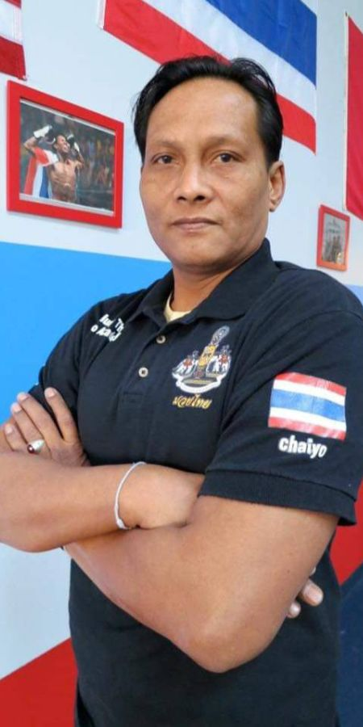

Meet Master Jud
Experience to learn from.
Surachai Chanmanee
Boxing name: Banluesak Chuenyim
Bring your questions about technique, conditioning and ring strategy. Discuss your goals and the coaching arrangements that may be possible with Master Jud.
Enquire to discussHis involvement and the details of your training are subject to discussion.
Your training focus
What do you want
to work on?
Use your enquiry to discuss technique development, conditioning, strategy or your wider training goals. Your experience and priorities provide a starting point for the conversation.
A session, a focused visit or a longer stay can be discussed before any training is agreed.
His story
From the ring to coaching.
Inspired by his father, who was also a boxer, Surachai began his Muay Thai journey at age seven in rural areas. After numerous matches, he moved to Bangkok, where he fought under the name Banluesak Chuenyim.
After retiring from fighting, his Muay Thai journey continued at the Kiattivanaram camp. He trained fighters including Chamuakthong, Thepyut and Yodthongchai Kiattivanaram. He later trained several world champions at the Por Pramuk Gym and helped to win the Best Muay Thai Camp in Thailand award in 2001.
His existing career account includes work with Buakaw Por Pramuk (now Buakaw Banchamek), Namsaknoi Yudthakarnkamtorn, Chokdee, Sakaeo, Phajonsuek, Pornpitak, Ratchamongkol, Thepyut and Chamuakthong, as well as Prasawan Por Pramuk and Kompayak from Por Pramuk Gym.
Teaching internationally.
Master Jud has travelled abroad to teach and conduct seminars, particularly in the United States at Fivepoints Academy in New York, Chaiyo MuayThai and Muaythaiiyarin, among other gyms.
Career account retained for prototype review. Names, chronology, achievements and teaching history await confirmation before public release.
From the archive
A career in photographs.
Your next step
Tell us what you want to work on.
Share your experience, goals and preferred dates to discuss training in Phuket. Arrangements and availability are subject to discussion.
Enquire to discuss